IDENTIFICATION ROUND
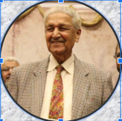
NAME THE SCIENTIST
He is widely regarded as the founder of gas-centrifuge enrichment
technology for Pakistan's nuclear deterrent program.
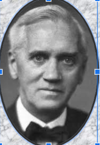
NAME THE SCIENTIST
In 1928, which started the antibiotic revolution. For his discovery of
penicillin, he was awarded a share of the 1945 Nobel Prize for
Physiology or Medicine.
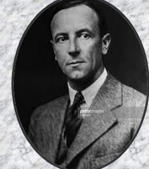
NAME THE SCIENTIST
In 1932, He made a fundamental discovery in the domain of nuclear
science: he proved the existence of neutrons – elementary particles
devoid of any electrical charge.
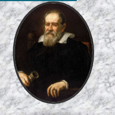
NAME THE SCIENTIST
He invented an improved telescope that let him observe and describe
the moons of Jupiter, the rings of Saturn, the phases of Venus,
sunspots and the rugged lunar surface. His flair for self-promotion
earned him powerful friends among Italy's ruling elite and enemies
among the Catholic Church's leaders.
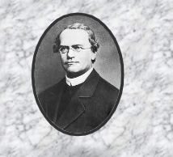
NAME THE SCIENTIST
Through his careful breeding of garden peas, he discovered the basic
principles of heredity and laid the mathematical foundation of the
science of genetics.
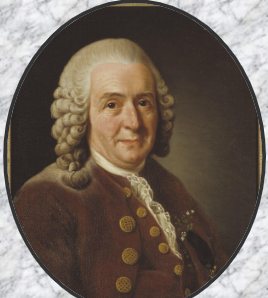
NAME THE SCIENTIST
His most lasting achievement was the creation of binomial
nomenclature, the system of formally classifying and naming organisms
according to their genus and species.
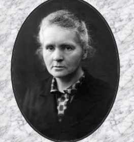
NAME THE SCIENTIST
She is remembered for her discovery of radium and polonium, and her huge contribution to finding treatments for cancer.
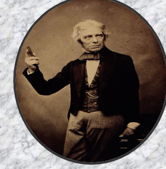
NAME THE SCIENTIST
He is probably best known for his discovery of electromagnetic induction, his contributions to electrical engineering and electrochemistry or due to the fact that he was responsible for introducing the concept of field in physics to describe electromagnetic interaction.
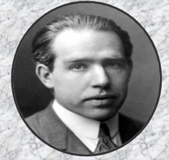
NAME THE SCIENTIST
In 1913, he proposed a theory for the hydrogen atom, based on quantum theory that some physical quantities only take discrete values. Electrons move around a nucleus, but only in prescribed orbits, and If electrons jump to a lower-energy orbit, the difference is sent out as radiation.
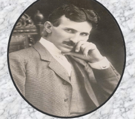
NAME THE SCIENTIST
He invented the first alternating current (AC) motor and developed AC generation and transmission technology.
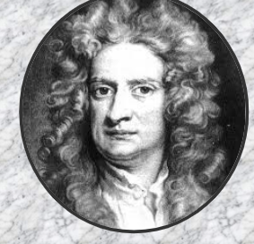
NAME THE SCIENTIST
He had discovered plant cells! He discovery led to the understanding of cells as the smallest units of life—the foundation of cell theory.
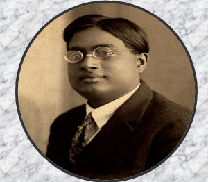
NAME THE SCIENTIST
He delivered his quantum formulations to Albert Einstein on this day in 1924, and Einstein instantly recognized it as a key quantum mechanics breakthrough.
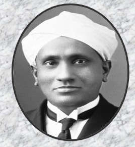
NAME THE SCIENTIST
He was the first person of colour and the first Asian to receive the award, following the discovery of a light scattering effect that has since become a key characterization tool in materials science. Physics and academia ran in Raman's family, where he was one of eight siblings.
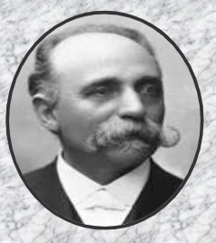
NAME THE SCIENTIST
He established two types of malaria, tertian and quartan fevers caused by Plasmodium vivax and Plasmodium malariae respectively. In 1886, he discovered that malarial fever (paroxysm) was produced by the asexual stage in the human blood (called erythocytic cycle, or Golgi cycle)..
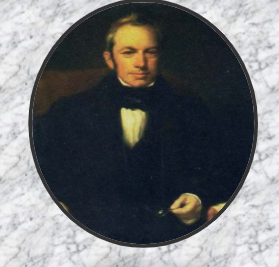
NAME THE SCIENTIST
He recognized and described the existence of the cell nucleus and stomata (breathing pores that act as gateways, in order to exchange gases with the atmosphere).
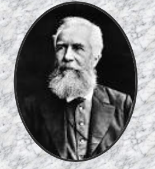
NAME THE SCIENTIST
He discovered and described hundreds of species, coined key terms, such as ecology and ontogeny/phylogeny, and was well known for his popularized version of the “recapitulation theory” during embryonic development of animals.
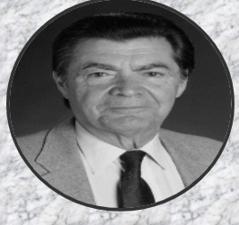
NAME THE SCIENTIST
recipient of the Nobel Prize in 1974 for his work that established our basic understanding of cellular organization
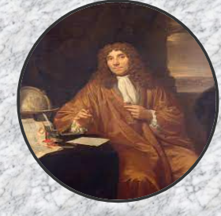
NAME THE SCIENTIST
He discovered both protists and bacteria [1]. More than being the first to see this unimagined world of 'animalcules', he was the first even to think of looking—certainly, the first with the power to see.
NAME THE SCIENTIST
In the 1990s ,His research laboratory carried out the systematic dissection of the molecular mechanisms that mediate embryonic induction.
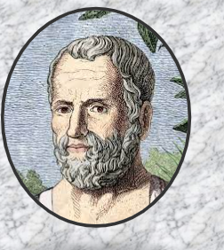
NAME THE SCIENTIST
He was a scholar, botanist, biologist, and physicist. The most important of his books are two large botanical treatises, Enquiry into Plants, and On the Causes of Plants, which constitute the first systemization of the botanical world and were major sources for botanical knowledge during antiquity and the Middle Ages.
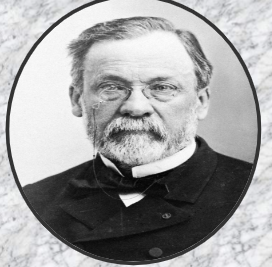
NAME THE SCIENTIST
He is best known for inventing the process that bears his name, pasteurization.
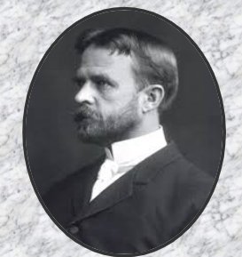
NAME THE SCIENTIST
American zoologist and geneticist, famous for his experimental research with the fruit fly (Drosophila) by which he established the chromosome theory of heredity
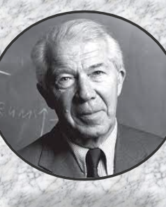
NAME THE SCIENTIST
He is remembered as an inventor of important scientific terminology. He coined the word lysosome in 1955, peroxisome in 1966, and autophagy, endocytosis, and exocytosis in one instance at the Ciba Foundation Symposium on Lysosomes held in London during 12–14 February 1963, while he, "was in a word-coining mood.
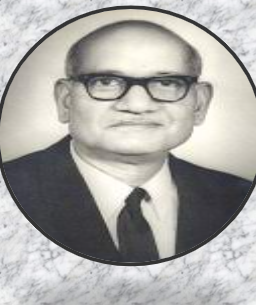
NAME THE SCIENTIST
His researches laid the foundation for understanding of tropical communities and their succession, environmental responses of plant populations, and productivity and nutrient cycling in tropical forests and grassland ecosystems. He formulated the first postgraduate course in ecology in India
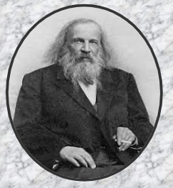
NAME THE SCIENTIST
In 1869, He contributed to the world of periodic tables by creating his version of the periodic table listing the most known elements at the time by their ascending atomic mass. The elements were also arranged by how reactive they were.
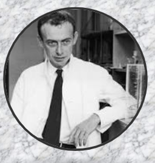
NAME THE SCIENTIST
American geneticist and biophysicist who played a crucial role in the discovery of the molecular structure of deoxyribonucleic acid (DNA), the substance that is the basis of heredity.
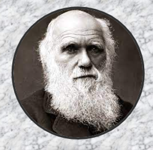
NAME THE SCIENTIST
He completed the Copernican Revolution by drawing out for biology the notion of nature as a system of matter in motion governed by natural laws
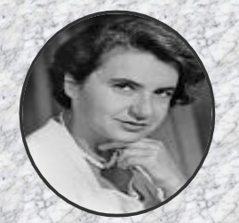
NAME THE SCIENTIST
The discovery of the structure of DNA in 1953
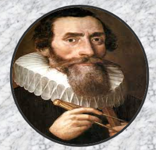
NAME THE SCIENTIST
He was the first to determine that refraction drives vision in the eye, and that using two eyes enables depth perception
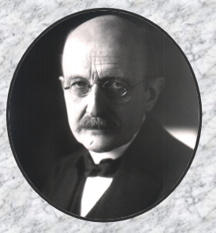
NAME THE SCIENTIST
He discovered the quantum of action, now known as Planck's constant, h, in 1900. This work laid the foundation for quantum theory, which won him the Nobel Prize for Physics in 1918